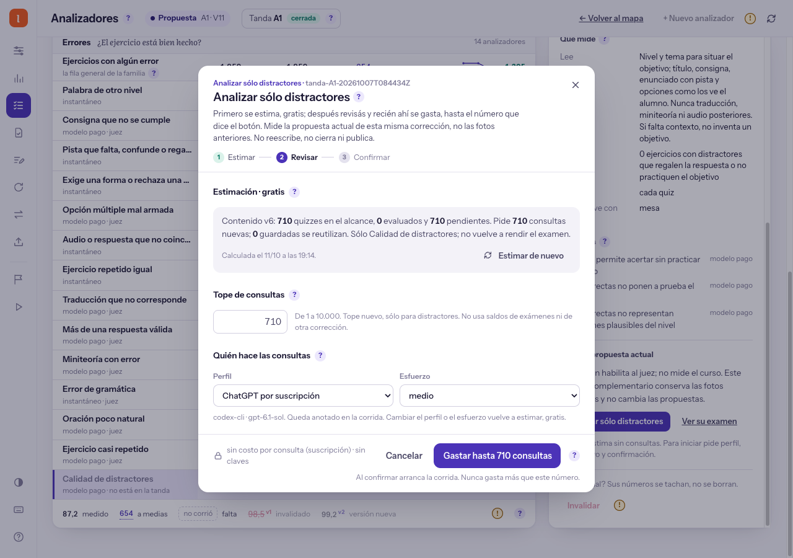

Distractores: la ruta y la evidencia ya están conectadas
Integrado desde worktree y activo en la app HTML principal.
Ya podés iniciar sólo distractores desde Analizadores. El examen enlaza su evidencia en Ejecuciones; el gasto desconocido deja de aparecer como cero.
El lanzamiento empieza en la ficha del juez
El servidor vuelve a comprobar contenido, versión y disponibilidad. Un pedido repetido no lanza otra corrida.
La estimación real encontró 710 pendientes, sin ejecutar

Podés bajar el tope. Los 710 son la estimación actual, no un presupuesto ya autorizado ni una garantía de aprobación.
El examen aprobado lleva a su registro exacto
- Calidad de distractores: 16 de 16 casos aprobados.
- Versión, fecha, proveedor, modelo y esfuerzo conservados.
- «Ver este registro en Ejecuciones».
- Abre esa misma evidencia de la campaña activa.
- Dice «registrado», no inventa un proceso.
- Cero consultas nuevas sólo con respaldo verificable.
Las corridas antiguas fallidas permanecen. La recuperación del 11/10 aparece como registro del resultado, no como una ejecución nueva.
Sin dato de gasto ya no significa cero
| Evidencia disponible | Qué muestra ahora |
|---|---|
| Recuperación oficial del examen | 0 consultas nuevas confirmadas |
| Progreso antiguo en «llamadas físicas» o casos | Sin dato de gasto; no se suma como cero |
| Análisis selectivo terminado y consolidado | Consultas del registro durable de esa operación |
| Resultado incierto o proceso en curso | No inventa gasto ni reutiliza automáticamente el saldo |
El total de Ejecuciones suma gasto confirmado del historial leído; no representa el saldo de la campaña.
La app cambió; el contenido sigue conservado
- Lanzamiento selectivo con estimación y confirmación.
- Examen e historial enlazados por identidad.
- Registro, progreso y gasto distinguidos.
- 1.907 pruebas HTML y 428 del servidor aprobadas.
- Ninguna consulta nueva a modelos.
- Checkpoint, examen y libro de respuestas idénticos.
- No se reescribe ni se cierra la tanda.
- No se aprueba, publica ni crea Corrección 2.
El diseño conserva los componentes de Learney. Se verificó en escritorio y celular; los cambios ajenos del árbol principal se preservaron.